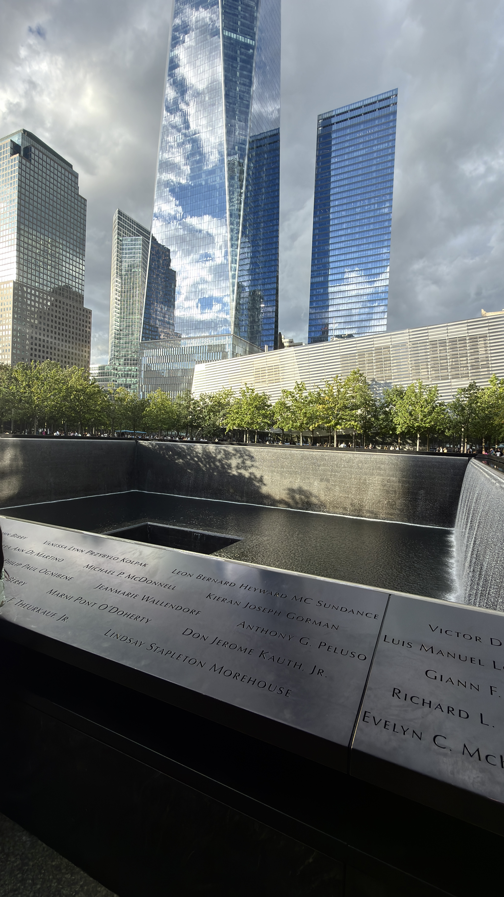
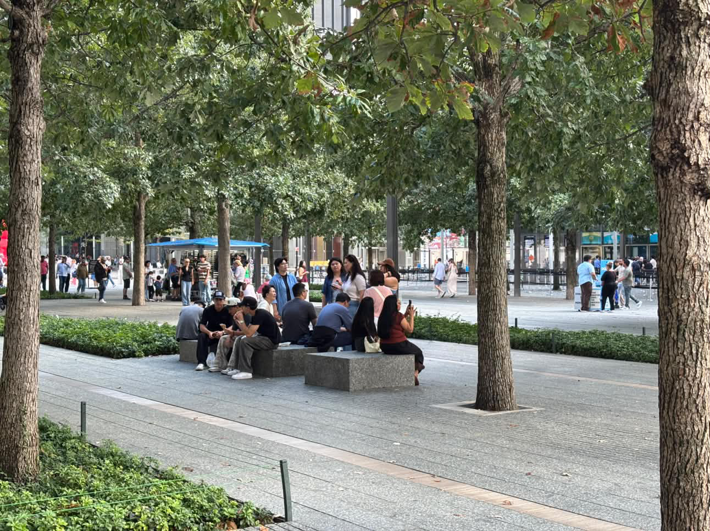
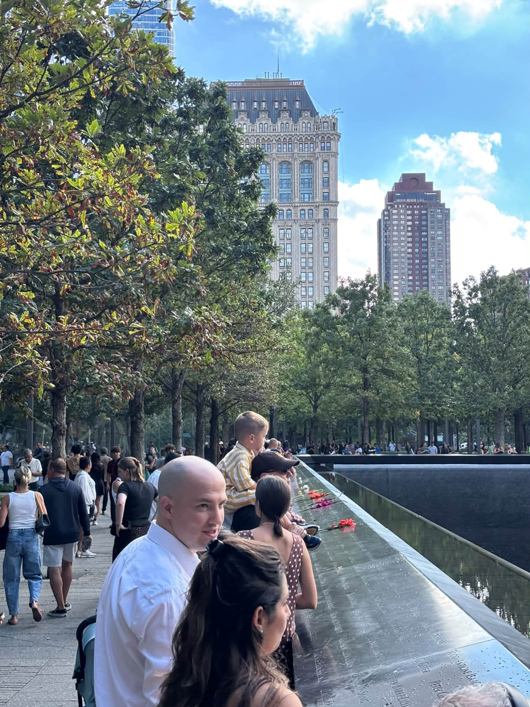
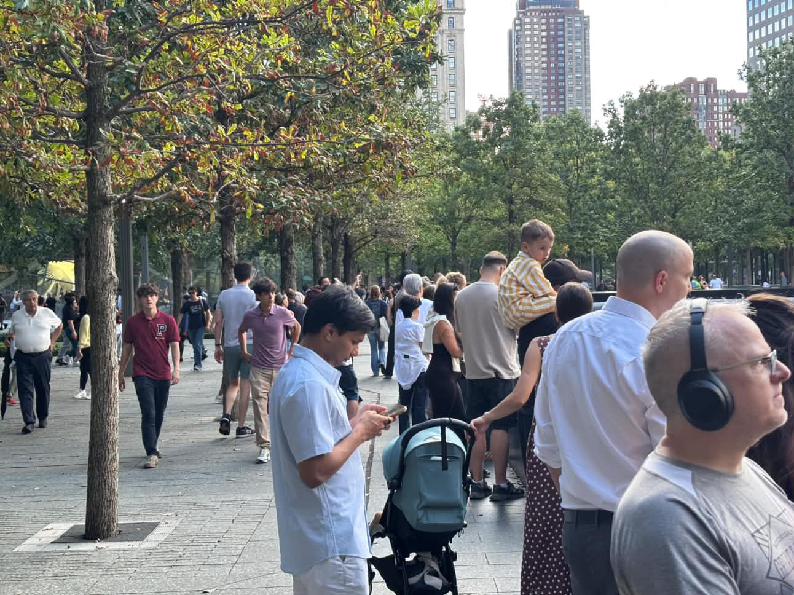

I only knew the basic story of 9/11 and had never really learned about what happened.
Since I pass by the World Trade Center pretty often, I became curious about the stories behind a place that had always felt familiar to me.
I realized I had never actually stopped to experience the memorial, so I decide to take a closer look.
Instead of only looking, I decided to pay attention to what I could hear.
↓
↓
↓
Where am I going?
 ↓
↓
↓
↓
↓
I had passed this place many times before, but I had never stopped to look closely.

↓
↓
↓
What do you hear? Focus on the sound.
Sounds like noise, right?
Surprisingly, it is the sound of water falling into the memorial pool.
↓
↓
↓
When I moved closer, I noticed the small details of the memorial.
| |
|
↓
↓
↓
I observed the people around the Memorial.
What were people doing?



↓
↓
↓
Before leaving, I stayed for one more moment.
Most of the people there seemed to be tourist, so the memorial
felt more like a tourists destination than a quiet place of remembrance.
It was also much noisier than I had expected.
However, seeing so many people visit this place made me realize that visiting and experiencing the memorial
can also be another way of remembering the event.
Even with the noise of the crowd, the sound of falling water
continued in the background.
I stayed for a moment, listened again, and then left.